scale(2.42703433%201)'%20gradientUnits='userSpaceOnUse'%20href='%23b'/%3e%3c/defs%3e%3crect%20width='1000'%20height='1000'%20fill='url(%23c)'%20ry='249.681'/%3e%3crect%20width='1000'%20height='1000'%20fill='url(%23d)'%20ry='249.681'/%3e%3cpath%20fill='%23fff'%20fill-rule='evenodd'%20d='M508.211%20878.328c-75.007%200-109.864-10.95-170.453-54.75-38.325%2049.275-159.686%2087.783-164.979%2021.9%200-49.456-10.95-91.248-23.36-136.873-14.782-56.21-31.572-118.807-31.572-209.508%200-216.626%20177.754-379.597%20388.357-379.597%20210.785%200%20375.947%20171.001%20375.947%20381.604.707%20207.346-166.595%20376.118-373.94%20377.224m3.103-571.585c-102.564-5.292-182.499%2065.7-200.201%20177.024-14.6%2092.162%2011.315%20204.398%2033.397%20210.238%2010.585%202.555%2037.23-18.98%2053.837-35.587a189.8%20189.8%200%200%200%2092.71%2033.032c106.273%205.112%20197.08-75.794%20204.215-181.95%204.154-106.382-77.67-196.486-183.958-202.574Z'%20clip-rule='evenodd'/%3e%3c/svg%3e)

Лестницы закрытого типа
Ступени и подступёнки образуют цельный, аккуратный марш. Подходит для классических и современных интерьеров. Каркас изготавливаем из швеллера или листового металла.
- Подступёнки
- Цельный силуэт
- Каркас под отделку
Лестницы под ключ · Московская область
Успешно Выполнено более 1000 объектов
Мы предоставляем возможность людям комфортно и безопасно подниматься выше!
Проектируем, изготавливаем на собственном производстве и монтируем лестницы для дома и коммерческих пространств любой сложности.
Наше портфолио
Форма лестницы зависит от проёма и высоты помещения: это может быть прямой, Г- или П-образный марш, площадка или забежные ступени. Инженер предложит подходящую конфигурацию на замере и подготовит проект.
Ступени и подступёнки образуют цельный, аккуратный марш. Подходит для классических и современных интерьеров. Каркас изготавливаем из швеллера или листового металла.

Превратим бетонное основание в завершённую лестницу: подберём отделку ступеней, подступёнков, боковин и ограждения под интерьер.

Изготавливаем мебель и детали интерьера из дерева: шкафы, столы, стеновые панели и перегородки для зонирования.
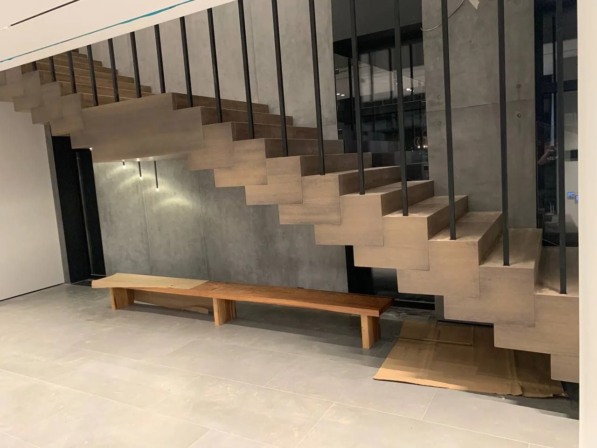
Реализованный проект · Барвиха
Усиленный металлокаркас, дубовая отделка без свесов, стеклянное ограждение и деревянный поручень. Фото, видео, состав работ и стоимость проекта.
Смотреть проектВ стоимость входят проектирование, изготовление и монтаж.
Конструкцию, материалы и комплектацию подбираем под ваш проект.
Точную стоимость рассчитаем после замера.
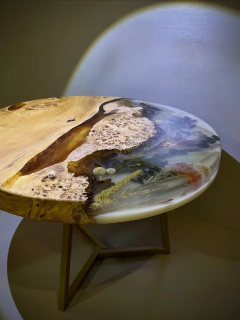
Портфолио КсенииАвторские столы из эпоксидной смолы Перейти на сайтОценка электросистемы, подбор решений для новой нагрузки и модернизация. Работы выполняем по договору.
Выезд мастера от 7 000 ₽
Услуги и стоимостьПочему мы
Берём на себя замер, проектирование, изготовление и монтаж лестницы. Работаем в Москве и Московской области на собственном производстве.
Стальной каркас подходит для прямых, поворотных и винтовых лестниц, в том числе для конструкций с открытым визуальным силуэтом. Он сохраняет форму при перепадах влажности и не рассыхается; деревянная отделка добавляет интерьеру тепла. На металлокаркас действует гарантия 10 лет по договору.
Инженеры, сварщики, плотники и маляры работают над проектом вместе — вам не нужно искать специалистов по отдельности. У команды есть профильное образование и опыт от 5 лет. Каждую лестницу проектируем индивидуально, с учётом геометрии помещения, материалов и деталей отделки.
Кроме лестниц на металлокаркасе, мастерская изготавливает обшивку бетонных лестниц, шкафы, столы, стеновые панели, перегородки для зонирования и другие изделия из дерева.
Стоимость зависит от сложности конструкции, высоты и выбранных материалов. Каркас обычно устанавливают на этапе черновой отделки, деревянную обшивку — после чистовой. Ограждение можно смонтировать вместе с каркасом или после обшивки.

Породы и отделка
Подбираем массив лиственницы, ясеня, дуба и американского ореха, натуральный шпон и комбинированные решения под проект и интерьер.
Тёплый оттенок и заметный рисунок волокон. Лиственница естественно устойчива к влаге и хорошо подходит для лестниц в загородном доме.
Светлая древесина с выразительным рисунком волокон. Ясень хорошо сочетается с современными интерьерами и светлой отделкой.
Плотная древесина с заметной текстурой. Дуб подходит для лестниц, рассчитанных на ежедневное использование, и сочетается как со светлой, так и с тёмной отделкой.
Тёмный шоколадный оттенок и выразительные прожилки делают американский орех заметным акцентом в интерьере.
Не уверены, какая порода и оттенок подойдут? Обсудим варианты под ваш интерьер.
Подобрать материалКак мы работаем
Обсуждаем задачу, Ваши пожелания, проём, стиль интерьера. Помогаем подобрать оптимальное решение. Делаем предварительную оценку стоимости.
День 1Специалист снимает размеры на объекте, обсуждает конфигурацию, ограждения и отделку. После замера готовим расчёт; если нужно больше времени на проработку, сообщим об этом заранее. Договор заключаем после согласования деталей.
День 2–4Инженер готовит подробный проект металлокаркаса лестницы со всеми размерами. Вы согласовываете внешний вид лестницы до начала работ по её изготовлению.
День 3–5Подбираем качественные материалы. Изготавливаем металлокаркас и деревянные элементы в нашем цехе.
День 10–35Бригада монтирует металлокаркас лестницы за 1–3 дня. После установки каркаса приезжает столяр для снятия точных размеров и согласования цвета покраски элементов. После монтажа обшивки лестницы и ограждений проверяем качество и даём рекомендации по уходу.
День 15–45Аванс вносится до начала работ; окончательный расчёт — после завершения работ и подписания акта. Размер платежей указывается в договоре и спецификации.
Обсудить проектЗона работ
Полезное
Короткие заметки о материалах и этапах изготовления — на основе процесса работы мастерской.
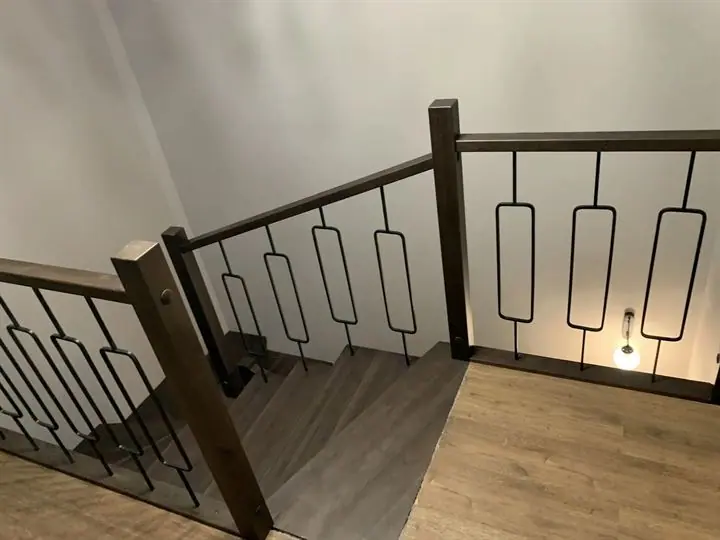
Этапы проекта
Металлический каркас обычно планируют до чистовой отделки, а деревянную облицовку устанавливают после завершения основных отделочных работ.
Читать статью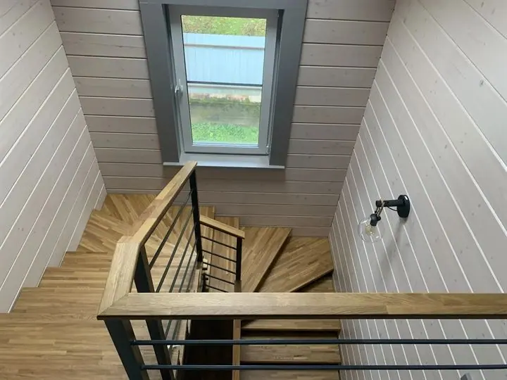
Материалы
Дуб, ясень, лиственница и американский орех отличаются оттенком и рисунком. Выбирать породу удобнее по образцам в сочетании с интерьером.
Читать статью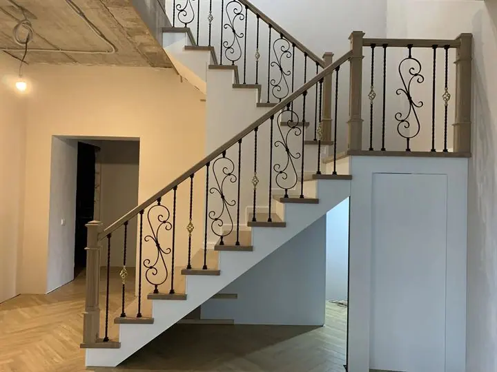
Замер и проект
Точный обмер учитывает геометрию проёма и фактические условия дома. Это основа для проекта, расчёта и согласования деталей до производства.
Читать статью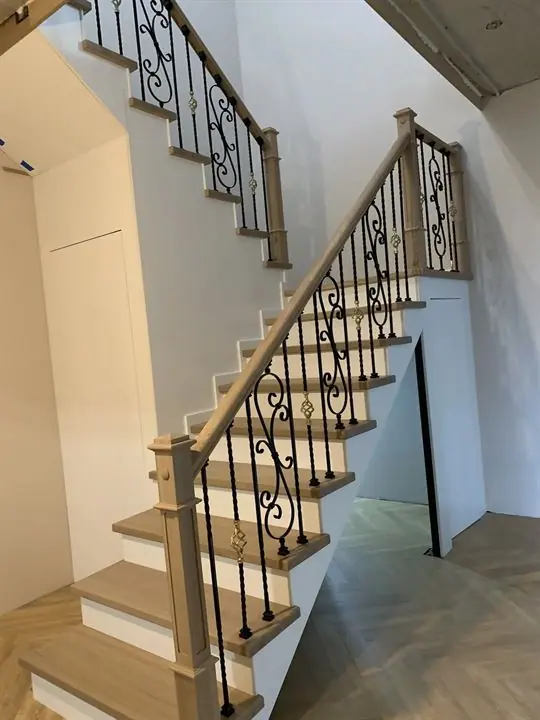
Конструкция
Открытый марш оставляет просветы между ступенями, а закрытый дополняют подступенниками. Оба решения подбирают под проект и интерьер.
Читать статью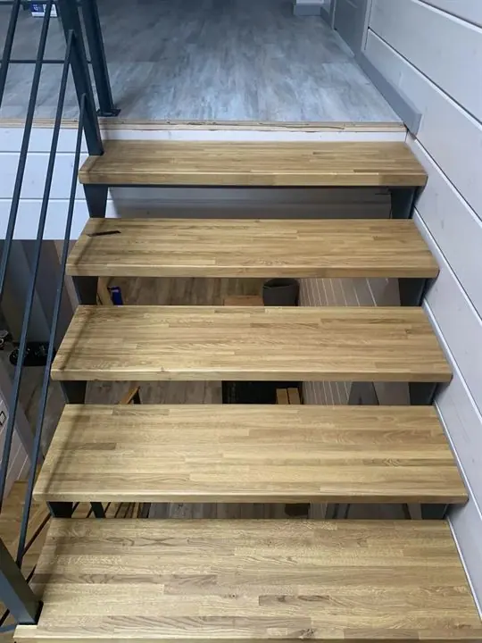
Размеры
Для предварительной оценки важны высота этажа, ширина марша, глубина ступени, форма и размеры проёма.
Читать статью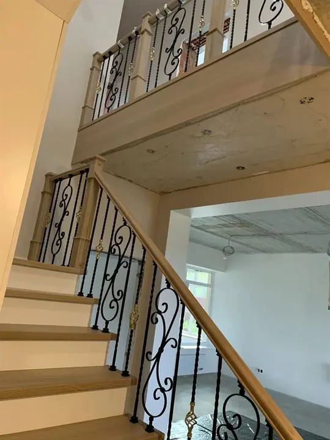
Планирование
Предварительную геометрию полезно согласовать до устройства проёма и чистовой отделки. Это помогает увязать лестницу с планировкой.
Читать статью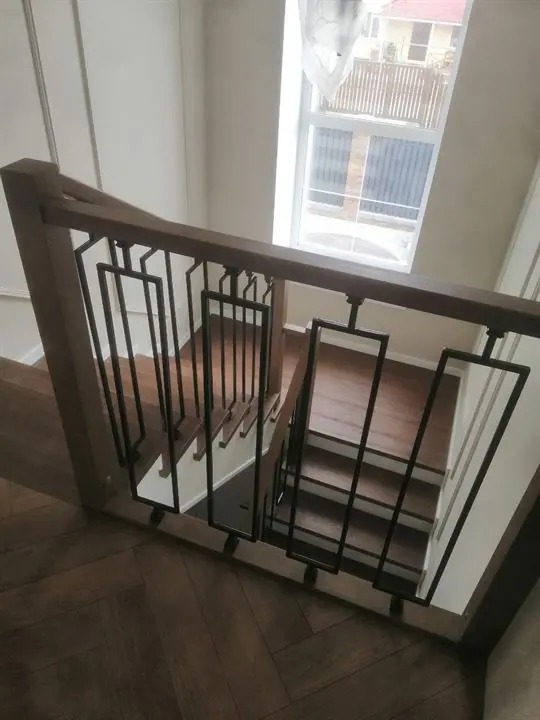
Ограждения
Дерево, металл и стекло создают разное визуальное впечатление. Тип ограждения и способ его крепления согласуют с конструкцией марша.
Читать статью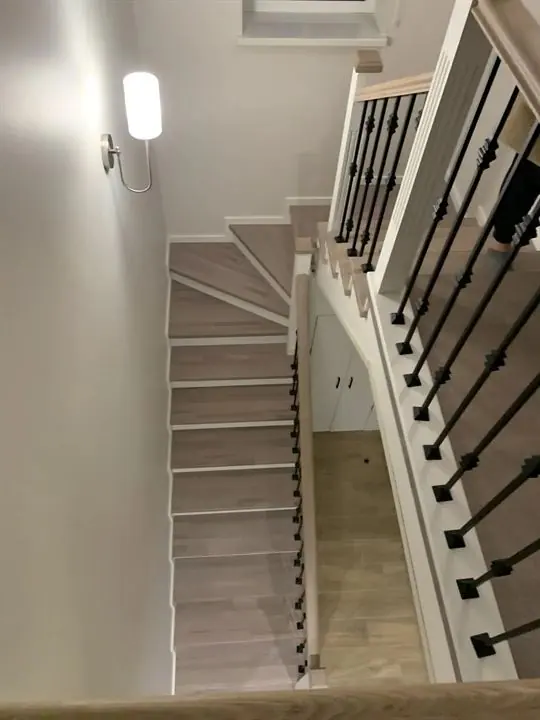
Отделка бетона
Работа начинается с проверки геометрии бетонного основания. Ступени, подступенники и боковые детали изготавливают по размерам конкретного объекта.
Читать статью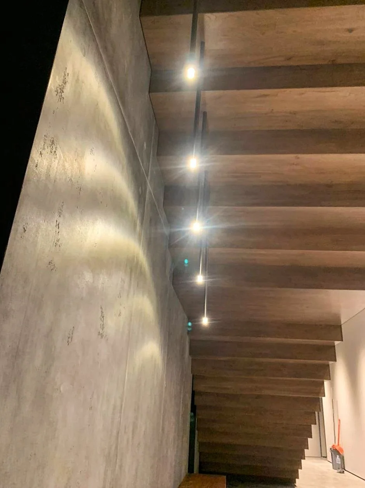
Освещение
Светильники можно разместить в стене, под ступенью или в других элементах. Проводку и управление лучше предусмотреть заранее.
Читать статьюОтзывы клиентов
Посмотрите реальные отзывы заказчиков о компании «Древесный Замысел» на Яндекс Картах.
Отзывы клиентов о лестницах и изделиях мастерской. Ниже — тексты из предоставленной подборки Яндекс Карт.
Обращался в «Древесный Замысел» по рекомендации знакомых. Нужно было изготовить и установить лестницу в частном доме. Всё сделали именно так, как договаривались: без задержек, с вниманием к деталям и аккуратным монтажом.Отзыв с Яндекс Карт
Огромное спасибо ребятам за лестницу! Это не просто конструкция, а настоящее произведение искусства. Всё сделано идеально от замера до монтажа. Мастера аккуратные, вежливые, всё убрали после себя. Лестница получилась именно такой, как мы хотели — надёжной, красивой и удобной. Рекомендую от души!Отзыв с Яндекс Карт
Очень довольны установкой лестницы! Лиственница выглядит потрясающе, пахнет настоящим деревом. Сборка идеальная, конструкция монолитная. Мастера вежливые и аккуратные. Рекомендую от души.Отзыв с Яндекс Карт
Заказывали у «Древесного Замысла» лестницу и мебель для дома. Хотим отметить отличный подход к работе и качество исполнения. Особенно понравилось, что специалисты смогли грамотно использовать…Фрагмент · полный отзыв на Яндекс Картах ↗
Заказывали лестницу, результатом остались очень довольны. Ступени и подступенники выполнены из дуба паркетной склейки, выглядит очень качественно…Фрагмент · полный отзыв на Яндекс Картах ↗
Обратились в «Древесный Замысел», чтобы сделать лестницу в загородный дом. С самого начала всё было организовано грамотно: обсудили наши пожелания, подобрали подходящий вариант и спокойно прошли весь процесс до готового результата. В итоге получили…Фрагмент · полный отзыв на Яндекс Картах ↗
Заказывали лестницу у «Древесного Замысла» — всё сделали отлично! Отдельно хочется отметить качество работы, аккуратность и внимательное отношение к нашим пожеланиям. Лестница получилась именно такой…Фрагмент · полный отзыв на Яндекс Картах ↗
Спасибо за такую красоту! Работу выполнили в срок, качественно, а главное — так, как я и визуализировала себе лестницу в нашем доме. Спасибо за ваш профессионализм! Будем советовать друзьям.Отзыв с Яндекс Карт
Ребята всё сделали хорошо. Предварительно пригласили на производство, я всё сам посмотрел. Отдельно всё замерили, установили металлический каркас, затем приехал мастер, который устанавливал лестницу и ещё провёл свои замеры…Фрагмент · полный отзыв на Яндекс Картах ↗
Обратился к ребятам с просьбой сделать лестницу. Ребята оправдали мои ожидания, сделали всё в срок и даже лучше, чем было задумано. Рекомендую!Отзыв с Яндекс Карт
Очень аккуратно сделали! Заказывали деревянную лестницу, выполнили в сроки и в самом лучшем виде. Всем советую, однозначно рекомендую.Отзыв с Яндекс Карт
Обратились в «Древесный Замысел» для изготовления лестницы в загородный дом. Остались очень довольны результатом! Лестница получилась качественной, надёжной и красивой. Все элементы выполнены аккуратно, отделка отличная…Фрагмент · полный отзыв на Яндекс Картах ↗
Заказывали в «Древесный Замысел» лестницу на второй этаж в дом. Хочу сказать огромное спасибо ребятам за профессиональный подход! Мастер приехал на замер вовремя, сразу видно — дело своё знает, подсказал по лучшей конфигурации и помог определиться с материалом…Фрагмент · полный отзыв на Яндекс Картах ↗
«Древесный Замысел» — отличная организация. Сам обращался один раз и один раз мои знакомые пользовались услугами данной организации. Все остались довольны, нареканий ребятам никаких нет. Развития вам и процветания!Отзыв с Яндекс Карт
Контакты
Оставьте заявку — перезвоним в течение 30 минут в рабочее время. Выезд замерщика по всей Московской области.
Для первого разговора достаточно описать задачу. Подскажем, с чего начать и какие варианты подойдут.
Загружаем форму заявки…
Форма временно не загрузилась. Свяжитесь с нами напрямую — поможем обсудить проект.
Как нас найти
г. Москва, НАО, район Коммунарка,
деревня Губкино, 78, сооружение 5
Постройте маршрут до мастерской. Фотографии помогут найти вход на территории.
Построить маршрут Как пройти по фотографиям Открыть карточку мастерской на картеПрактика в мастерской
Вводный очный курс для тех, кто хочет познакомиться со столярным делом: пять занятий по 60 минут в действующей мастерской, знакомство с материалами и инструментом, основы обработки и сборки под наблюдением мастера.
Это предварительная программа; последовательность практики уточняется с мастером и зависит от состава группы и задач курса.
Перед записью менеджер подтвердит даты, состав группы и практические задания. Курс проходит очно в мастерской; каждое занятие длится 60 минут.
Оплату целиком или частями можно обсудить с менеджером. По окончании выдаётся сертификат мастерской о прохождении курса: он не заменяет государственную квалификацию и не является обещанием трудоустройства.
Вы увидите, как устроена столярная мастерская, познакомитесь с материалами и назначением основных инструментов, попробуете отдельные базовые операции под наблюдением мастера.
Это возможность проверить интерес к ремеслу и получить первое практическое знакомство с производством. За пять коротких занятий курс не заменяет профессиональное обучение и не обещает трудоустройство.
Занятия очные, по 60 минут, в действующей мастерской. Предварительный план: знакомство с производством и безопасностью; инструмент, заготовка и разметка; основы обработки; соединение и сборка; разбор учебной работы.
Практические действия и доступ к оборудованию определяются мастером с учётом безопасности, состава группы и текущей работы. Даты и доступность мест менеджер подтвердит перед записью.
Стоимость курса — 55 000 ₽. Возможность оплатить целиком или частями, даты платежей и остальные условия обсуждаются с менеджером до записи.
После завершения курса мастерская выдаёт сертификат о прохождении. Это подтверждение участия, а не документ о государственной квалификации.
Нажмите «Узнать об обучении» и оставьте телефон. Менеджер расскажет о ближайшем наборе, уточнит формат, места и условия оплаты, а также ответит на вопросы.
Запрос не означает автоматическую запись или оплату: участие подтверждается после согласования даты и условий.
Поставщик материалов · 2026
ООО «Ультрадекор» подтверждает статус официального дилера ООО «21 Век Юг» в 2026 году. Откройте изображение сертификата для увеличенного просмотра. Документ также можно скачать.